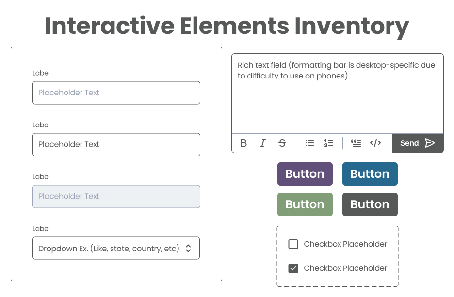

{kind=link}
{kind=link}
Style Guide/Style Tile

Some elements were not used in the current state of the final product, but I'd rather have them and not need them than need them and not have them.
Based on the multitude of rubrics provided in the assignment, I believe we are to make a presentation/resource-hub website organizing all of our design and development materials. The structure of this research base will roughly follow the third rubric provided. All images will be openable with click while large text pieces will link to where they can be read. (i.e., If it was written on a Google Doc, I will provide a link to the doc)
The non-profit I chose for this assignment is "reStart", a local organization and charity that works in the Kansas City area. It specializes in assisting those suffering from homelessness and/or a lack of support. I personally have not pursued aid from this charity, but I do have experience with charities and organizations like it.

Some elements were not used in the current state of the final product, but I'd rather have them and not need them than need them and not have them.
While the previous site fell flat mostly in terms of responsiveness, there are still quite a few departments in which it can be built/immproved upon.

Note: "Help/Donate" button does not lead anywhere due to time constraints. Apologies.
{kind=link}
{kind=link}